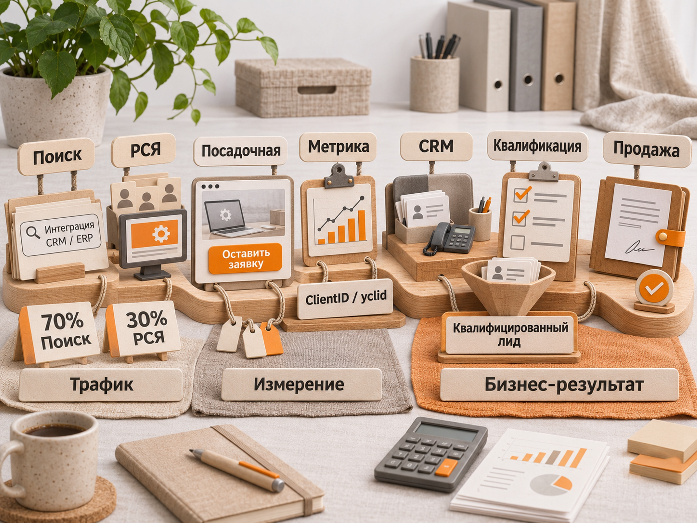
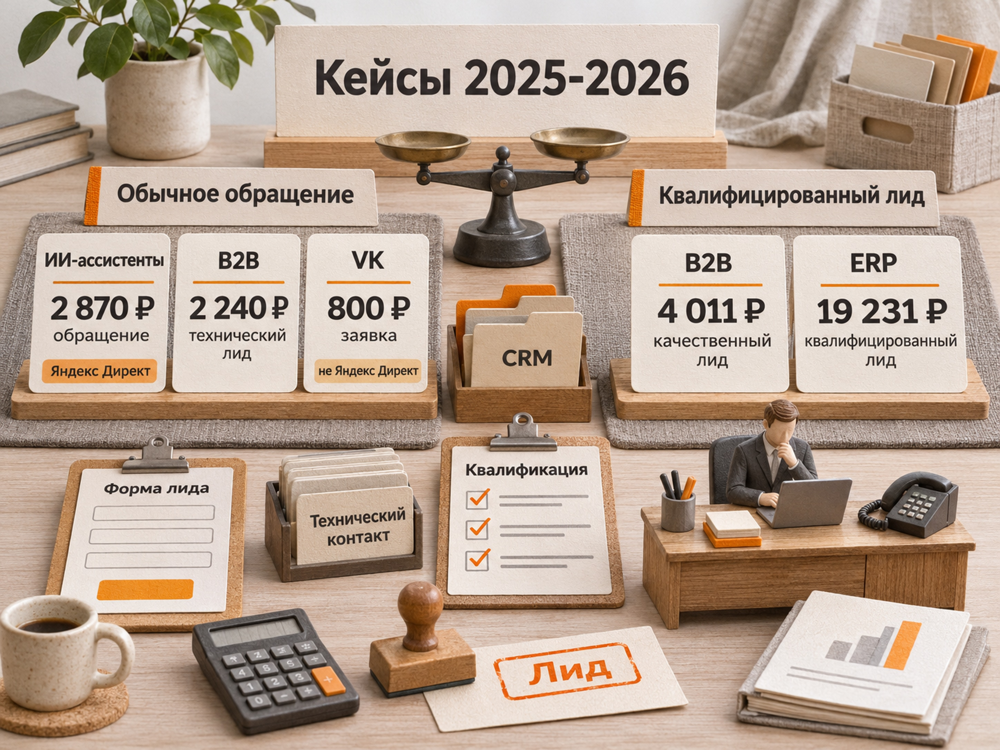
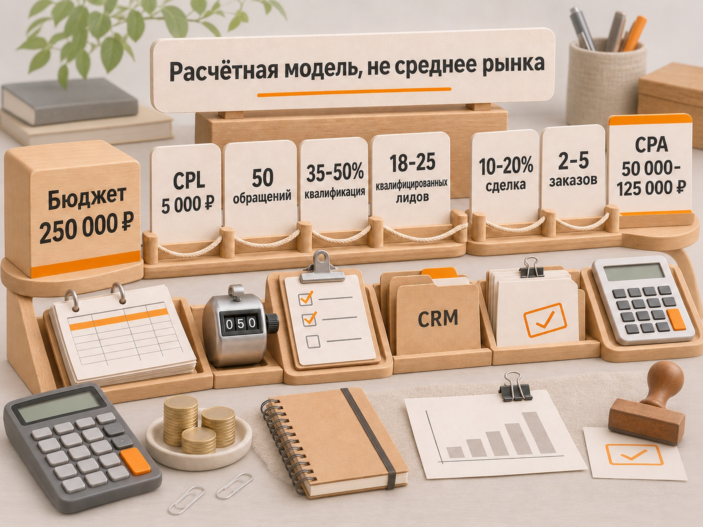

Блог о платном трафике
Продвижение услуг автоматизации бизнеса в 2027 году: Яндекс Директ, каналы и прогноз бюджета
Продвижение автоматизации бизнеса продаёт не саму CRM или ERP, а понятный результат: меньше ручной работы, быстрее обработка заявок, прозрачнее продажи и управляемее операционные процессы. В статье собраны свежие сигналы рынка, открытые кейсы 2025-2026 годов и рабочая модель бюджета для Яндекс Директа.
Что входит в нишу автоматизации бизнеса и кому продавать
В одной рекламной кампании часто смешивают несколько разных услуг: внедрение CRM, настройку ERP, автоматизацию 1С, интеграции с телефонией и сайтом, роботизацию повторяющихся операций, AI-ассистентов и поддержку уже установленной системы. Для клиента это разные задачи, сроки принятия решения и бюджеты.
Поэтому первый шаг в продвижении - разделить предложение по проблеме и типу покупателя. Владельцу компании нужен контроль и прогнозируемость, руководителю продаж - порядок в воронке, финансовому директору - управляемая отчётность, а операционной команде - меньше ручных действий.
| Сегмент | Что покупает | Какой оффер показывать | Основной лид-магнит |
|---|---|---|---|
| Малый и средний бизнес | CRM, телефония, воронка, интеграции | Порядок в заявках и контроль менеджеров | Разбор текущего процесса |
| Производство и дистрибуция | ERP, 1С, склад и планирование | Единая картина заказов, запасов и себестоимости | Аудит процессов и интеграций |
| Сервисные компании | CRM, расписания, повторные продажи | Быстрее обработка обращения и меньше потерь | Карта автоматизации |
| Компании с AI-задачей | Ассистент, поиск по базе, автоматизация офиса | Экономия времени на повторяющихся операциях | Пилот на одном процессе |
Какой спрос уже сформирован
Рынок ещё не стал массовым. По оценке CNews, в 2025 году в России было более 50 заметных CRM-продуктов, проникновение CRM оценивалось примерно в 30%, а доля отечественных решений - примерно в 90%. В том же материале приводился прогноз роста рынка на 21% в 2024-2026 годах. Это означает, что спрос есть, но клиенту часто приходится сначала объяснить саму задачу и только потом выбирать систему.
Исследование B1, опубликованное в 2026 году, показывает высокий интерес к AI: 67% участников ожидают его внедрения, 49% рассматривают альтернативное программное обеспечение, а 48% уже используют AI в финансовых и бухгалтерских задачах. При этом Strategy Partners сообщала, что у 73% компаний нет владельца процесса для внедрения AI-агентов, 55% не могут чётко описать проблему, а 64% не готовы адаптировать процессы.
Практический вывод для рекламы: рынок нужно прогревать диагностикой. Запрос «внедрение CRM» уже ближе к покупке, а запрос «как сократить ручную работу в отделе продаж» требует сильного объяснения, примеров и понятного первого шага.
Какие каналы используют интеграторы
В открытых кейсах интеграторов повторяется связка из платного спроса, экспертного контента и последующей работы с базой. Каналы решают разные задачи, поэтому сравнивать их только по стоимости заявки некорректно.
| Канал | Роль | Как запускать | Что считать |
|---|---|---|---|
| Яндекс Директ, поиск | Перехват готового спроса | Отдельные группы по проблеме, системе и отрасли | Квалифицированный лид и договор |
| РСЯ и ретаргетинг | Охват и возврат посетителей | Сегменты по поведению, офферу и стадии решения | Ассистированные обращения и встречи |
| VK Ads | Демонстрация решения и работа с аудиторией | Короткие видео, отраслевые офферы, лид-формы | Качество заявки и окупаемость |
| SEO и экспертный контент | Снижение зависимости от аукциона | Страницы под процессы, отрасли и интеграции | Органический лид и его путь до сделки |
В кейсе интегратора Битрикс24 на Workspace основным источником на старте был Яндекс Директ, а затем к нему добавили VK Ads с сегментированными предложениями и видео. Это полезный пример распределения ролей, но его результат в VK нельзя переносить на стоимость лида в Директе.
Яндекс Директ: как собрать рекламную систему
Для услуг автоматизации Директ должен вести не на общий экран «внедрим всё», а на страницу с одним понятным сценарием. Кампания, объявление, посадочная и форма должны говорить об одной проблеме клиента.

Поиск по проблеме, системе и отрасли
На первом слое собирайте коммерческие запросы: внедрение CRM, автоматизация отдела продаж, интеграция 1С с сайтом, ERP для производства, настройка сквозной аналитики. На втором слое - запросы по последствиям: теряем заявки, менеджеры забывают перезванивать, нет единого отчёта, ручной ввод данных.
Эти группы нельзя объединять в одно объявление. Для ERP важны отрасль, масштаб и интеграции, для CRM - процесс продаж и скорость реакции, для AI-ассистента - конкретная операция и безопасный пилот. Минус-слова должны исключать вакансии, обучение, бесплатные шаблоны, скачивание и запросы пользователей, которые ищут только инструкцию.
РСЯ и ретаргетинг
РСЯ подключайте после того, как понятны рабочие сегменты и есть материалы для объяснения сложного продукта. Здесь полезны короткая демонстрация процесса, схема интеграций, отраслевой кейс и приглашение на разбор. Ретаргетинг разделяйте по глубине интереса: был на странице услуги, смотрел кейс, начал заполнять форму, получил коммерческое предложение.
Доля поиска и РСЯ в одном из открытых кейсов AI-ассистентов составила примерно 70% и 30%. Это характеристика конкретной кампании, а не норматив для всей ниши.
Посадочная страница и оффер
На странице должны быть четыре ответа: какую проблему решаете, для кого, как проходит внедрение и какой результат можно проверить. В первом экране достаточно одного действия: запросить диагностику, получить карту процессов или обсудить пилот. Калькулятор экономии допустим только при наличии понятных исходных данных, иначе он создаёт ложную точность.
Кейсы оформляйте через исходную ситуацию, объём работ, срок, измеримый результат и ограничения. Формулировка «настроили CRM» слабее, чем «собрали единую воронку, связали телефонию и сократили ручную обработку заявок на 35%».
Аналитика: от обращения до сделки
Ключевая ошибка в B2B-автоматизации - оптимизировать Директ по всем отправленным формам. Часть обращений будет нецелевой, часть не дозвонится, часть не готова к проекту. Минимальная цепочка целей должна включать отправку формы, звонок, подтверждённый контакт, квалификацию, встречу или бриф, коммерческое предложение и договор.
Передавайте в Метрику и рекламную систему данные из CRM с ClientID или yclid. Официальная документация Яндекса описывает передачу офлайн-конверсий и связывание их с рекламным визитом; стандартное окно для такой связи составляет 21 день. Для длинного цикла сделки дополнительно ведите собственный отчёт по источнику, дате первого касания и выручке.
Внутри сайта полезны отдельные материалы про офлайн-конверсии в Яндекс Директе, аудит Яндекс Директа и выбор стратегии в Яндекс Директе.
Переходить на оплату за конверсии стоит после проверки целей, достаточного объёма данных и реалистичной цены результата. Если в цель попадают все формы подряд, алгоритм будет искать дешёвые обращения, а не будущие договоры.
Что показывают открытые кейсы 2025-2026 годов
Ниже собраны публичные цифры, которые можно использовать как ориентиры для расчёта, но нельзя объявлять средним показателем рынка. У кейсов разные услуги, география, цикл сделки и правила подсчёта.

| Кейс | Период | Бюджет | Результат | Ограничение |
|---|---|---|---|---|
| AI-ассистенты для бизнеса | На странице период не указан | 318 610 руб. | 86 конверсий в дашборде, около 111 обращений с учётом звонков, примерно 2870 руб. за обращение | Около 20% закрытия и CPA около 14 400 руб. - расчёт по данным кейса |
| Промышленный B2B, eLama | 21 ноября 2025 - 14 мая 2026 | 613 811 руб. | 222 контакта, 153 квалифицированных лида, 4011 руб. за квалифицированный лид | Отдельно приведена стоимость технического лида 2240 руб. |
| Интегратор бизнес-процессов | На странице период не указан | 250 000 руб. в месяц | 9-13 квалифицированных лидов, 27 778-19 231 руб. за лид | Публичный кейс не раскрывает весь цикл сделки |
| Интегратор Битрикс24, Workspace | Февраль - октябрь 2025 | Около 6000 000 руб. за 9 месяцев | Около 7500 заявок, около 800 руб. за заявку в VK Ads | Это показатель VK Ads, не стоимость лида в Директе |
В первом кейсе 318 610 руб. расходов делятся примерно на 111 обращений, что даёт около 2870 руб. за обращение. Если применить опубликованную оценку закрытия около 20%, получится около 22 заказов и расчётная стоимость заказа около 14 400 руб. Это авторский пересчёт открытых данных, а не подтверждённая статистика рекламодателя.
Сколько стоят лид, квалифицированный лид и заказ
Для планирования разделяйте три метрики:
- стоимость обращения - цена формы или звонка;
- стоимость квалифицированного лида - цена подтверждённой задачи, бюджета и полномочий на стороне клиента;
- стоимость заказа - расходы на рекламу, делённые на подписанные договоры.
Если обращение стоит 2870 руб., а квалификацию проходит половина, квалифицированный лид уже стоит около 5740 руб. Если до договора доходит каждый пятый квалифицированный лид, стоимость заказа составит около 28 700 руб. Такой пересчёт показывает, почему нельзя оценивать интегратора только по CPL.
В B2B также важно считать стоимость встречи, коммерческого предложения и оплаченного этапа. Для проектов с внедрением ERP или AI-пилотом первый договор может быть небольшим, а основная выручка появится после расширения работ. Тогда в отчёте нужны и первичная сделка, и доход за согласованный период.
Прогноз бюджета на запуск
Ниже - рабочая модель для рекламного бюджета 250 000 руб. в месяц. Она использует допущение о CPL 5000 руб., а не утверждает, что именно столько стоит лид на рынке. В расчёт не включены посадочная страница, CRM, аналитика, работа специалиста, НДС и расходы на внедрение.

| Показатель | Осторожная модель | Рабочая модель |
|---|---|---|
| Рекламный бюджет | 250 000 руб. | 250 000 руб. |
| Плановый CPL | 5000 руб. | 5000 руб. |
| Обращения | 50 | 50 |
| Квалификация | 35% | 50% |
| Квалифицированные лиды | 18 | 25 |
| Конверсия в договор | 10% | 20% |
| Заказы | 2 | 5 |
| Расчётная стоимость заказа | 125 000 руб. | 50 000 руб. |
В реальном запуске диапазон будет шире: первые недели уйдут на проверку спроса, часть бюджета заберут нецелевые запросы и тесты посадочных. Поэтому безопаснее планировать бюджет минимум на один полный цикл проверки, а результат фиксировать после передачи статусов из CRM.
Пошаговый план на первые 30 дней
| Период | Что сделать | Результат |
|---|---|---|
| Дни 1-5 | Разделить услуги, отрасли, географию, запросы и минус-слова | Карта рекламных групп и посадочных |
| Дни 6-10 | Подготовить офферы, кейсы, формы и события в Метрике | Готовая воронка измерений |
| Дни 11-15 | Запустить поиск по самым коммерческим группам | Первые данные по спросу и качеству |
| Дни 16-21 | Проверить запросы, объявления, звонки и статусы CRM | Список рабочих и нерабочих сегментов |
| Дни 22-30 | Добавить РСЯ и ретаргетинг для подтверждённых аудиторий | Вторая волна тестов с понятными целями |
Рекламные решения принимайте по срезам: отрасль, услуга, запрос, регион, тип посадочной и статус лида. Средняя цифра по всей кампании часто скрывает один рабочий сегмент и несколько убыточных.
Ошибки, которые съедают бюджет
- Запускать одну кампанию на все услуги и отрасли.
- Показывать технологию вместо результата для конкретного процесса.
- Считать отправленную форму полноценным лидом.
- Передавать в оптимизацию только онлайн-конверсии при длинном цикле сделки.
- Переносить CPL из другого кейса без поправки на услугу, регион и качество лида.
- Подключать автоматическую стратегию до проверки целей, данных и целевой цены.
- Не связывать рекламу с CRM и не знать, какие заявки дошли до встречи и договора.
Итог
В 2027 году продвижение автоматизации бизнеса будет выигрывать у тех, кто продаёт не «внедрение системы», а измеримый переход от ручного процесса к управляемому. Яндекс Директ остаётся основным каналом для сформированного спроса, но его результат зависит от сегментации, посадочной страницы и передачи офлайн-статусов.
Для первого финансового ориентира можно взять модель 250 000 руб. рекламного бюджета, 50 обращений, 18-25 квалифицированных лидов и 2-5 договоров. Это диапазон для проверки экономики, а не обещание результата. После первого цикла его нужно заменить фактическими данными по квалификации, встречам, коммерческим предложениям и оплатам.